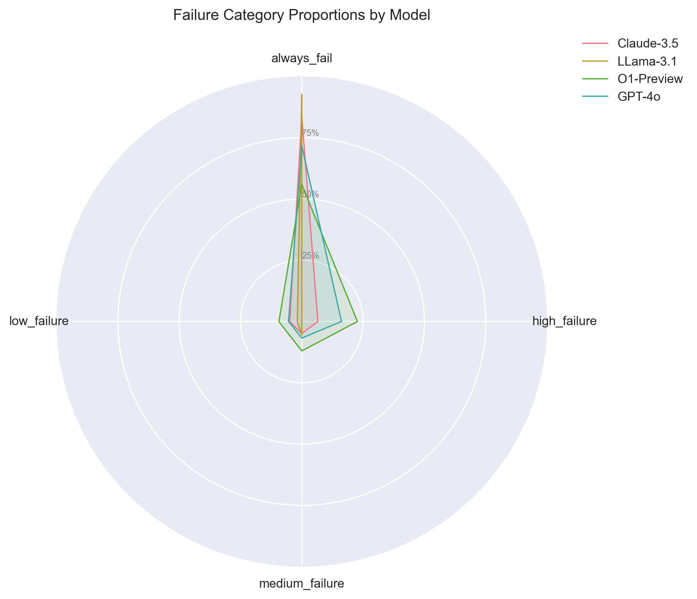

AI Model Performance Analysis Report
Success Rate Distribution

How to read: This boxplot shows the distribution of success rates across all tasks for each model.
- The box represents the interquartile range (IQR)
- The line inside the box is the median
- Whiskers show the range of typical values
- Points outside whiskers are outliers
Insight: Higher median and tighter IQR indicate more consistent performance.
Valid Submission Rates

How to read: Bar heights show the average percentage of valid (technically correct) submissions.
Insight: High valid rates indicate good technical execution, even if solutions aren't optimal.
Failure Category Breakdown
How to read: Stacked bars show count of tasks in each failure category.
- Always Fail: 0% success rate
- High Failure: >60% failure rate
- Medium Failure: 30-60% failure rate
- Low Failure: <30% failure rate
Insight: More low-failure tasks indicate better overall performance.
Task Success Heatmap

How to read: Color intensity shows success rate per task-model combination.
- Green: High success
- Yellow: Medium success
- Red: Low success
Insight: Identify tasks where models excel or struggle collectively.
Failure Profile Radar

How to read: Shape shows proportion of tasks in each failure category.
- Larger area in green (low failure) is better
- Spikes in red (always fail) indicate problem areas
Insight: Compare overall failure profiles at a glance.